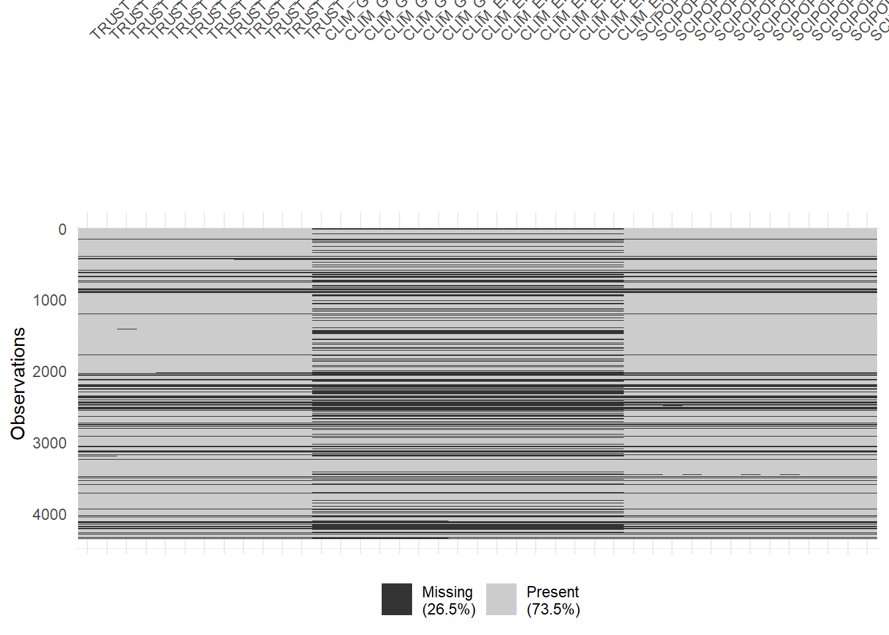
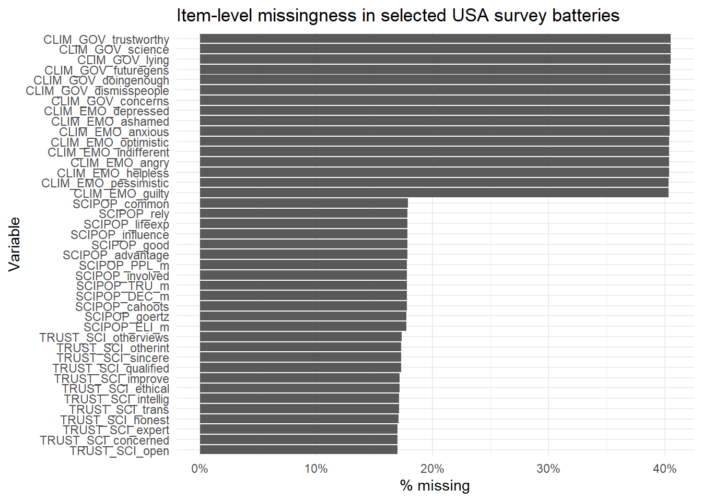
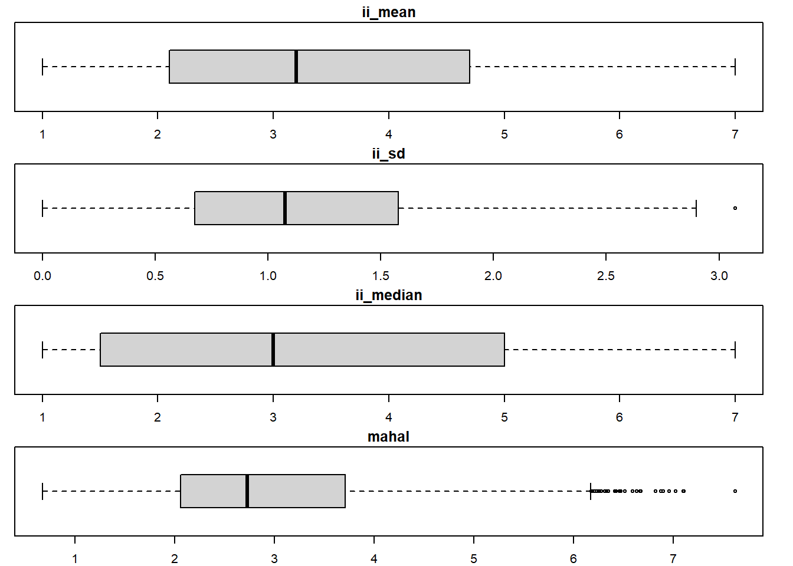
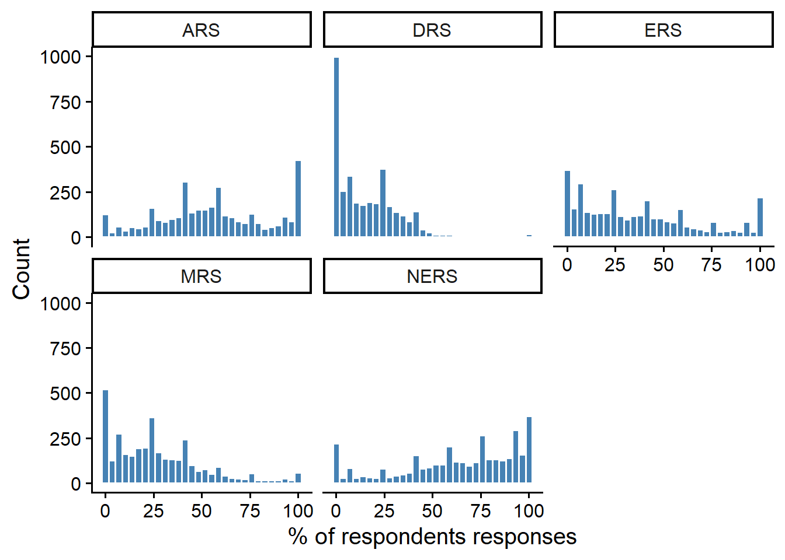

This assignment explores data quality aspects of United States of America (USA) data set of the Trust in Science and Science-related Populism (TISP) project. The TISP project consists of a consortium of 241 researchers from 179 institutions focused on global public opinion regarding science. Data was collected from 68 countries from November 2022 to August 2023, with the survey gathering the opinions of 71,922 respondents in total (TISP, n.d).
The project measures various constructs and characteristics. We focus on the questionnaire items related to science-related populism for this assignment.
Science-related populism has been conceptualized as a set of ideas suggesting a fundamental conflict between an allegedly virtuous people and an allegedly immoral academic elite over who should be in charge of science-related decision-making and over what is deemed true knowledge (Mede et al., 2020).
Conceptually, science-related populism consists of four major components:
the ordinary people,
the academic elite,
science-related decision-making sovereignty, and
truth-speaking sovereignty.
This is the final assignment task of KODAQS Academy, Course D2 Survey of “Team USA”.
As our interest here is in the data quality aspects of the dataset, we consider the findings of various data quality tests - including attention checks, para data, missing data, response distribution and response styles – to discern the overall quality of the USA dataset and to highlight any respondents that should be flagged due to their response behaviours.
Some parts of the assignment were intended to be completed collaboratively and others individually, each teammate was responsible for at least one section of the indicator. Overall, we worked together constructively and collaboratively on this script. Consequently, the listed names do not fully capture the collaborative nature of the work, as all team members contributed across multiple sections.
Data Preparation
In a first step you have to define your R setup (e.g., install und load relevant packages) and need to read in the dataset. Do your basic cleanup and wrangling here (e.g. filtering for your country group, selection of used variables etc.).
Load Packages and Read Data
#### ------------- Load Packages ------------- ####library(here) library(tidyverse) library(skimr) library(labelled) library(psych)library(stringr)library(resquin)library(gt)library(ggcorrplot)library(visdat)library(tibble)library(naniar)#### ------------- Read Data ------------- ##### data_rawdata_raw <-read.csv(here("00_data/ds_full.csv"), sep =";") %>%filter(COUNTRY_CODE =="USA") %>%mutate(across(where(is.numeric), ~na_if(., 99))) %>%mutate(across(where(is.character), ~na_if(., "99")))# raw data needs to be processed# Source: https://osf.io/5c3qd/files/xz8bw# (1.) Identify and exclude duplicate completes# Initialize ID data (stored in separate csv file)ds_id <-read.csv(here("00_data/ds_id.csv"), sep =";") data_raw_tmp <-left_join(data_raw, ds_id, by ="ID_QUALTRICS") %>%group_by(ID_POLLCMPNY) %>%filter(is.na(ID_POLLCMPNY) |row_number(Recorded) ==1) %>%ungroup()# Confirm that there are no duplicate completes (empty tibble)data_raw_tmp %>%filter(!is.na(ID_POLLCMPNY)) %>%group_by(ID_POLLCMPNY) %>%summarise(n =n()) %>%filter(n >1)
# A tibble: 0 × 2
# ℹ 2 variables: ID_POLLCMPNY <chr>, n <int>
# % removedper_rem1 <- ((nrow(data_raw) -nrow(data_raw_tmp)) /nrow(data_raw)) *100data_raw <- data_raw_tmprm(ds_id)rm(data_raw_tmp)# (2.) Exclude outlier values for age# % outliersper_out <-mean(data_raw$DEM_AGE <18| data_raw$DEM_AGE >100, na.rm =TRUE) *100# Set to NAdata_raw <- data_raw %>%mutate(DEM_AGE =if_else(DEM_AGE <18| DEM_AGE >100, as.numeric(NA), DEM_AGE) )# (3.) Gender (1 = male)data_raw <- data_raw %>%mutate(DEM_GENDER =ifelse(DEM_GENDER ==1, 1, 0)) %>%mutate(DEM_GENDER =as.factor(DEM_GENDER))# (4.) Exclude respondents who did not reach the first question = DEM_GENDERdata_raw_tmp <- data_raw %>%filter(!is.na(DEM_GENDER))# % removedper_rem2 <- ((nrow(data_raw) -nrow(data_raw_tmp)) /nrow(data_raw)) *100data_raw <- data_raw_tmprm(data_raw_tmp)
ds_full.csv: The raw dataset before any cleaning or transformations.
The raw data was processed as follows:
The data was filtered using COUNTRY_CODE == "USA"
Duplicate respondents were excluded: 0.32%
Age values outside the range of 18 to 100 were set to NA: 0.02%
Gender was recoded into a binary variable (1 = male), with self-described responses excluded from this coding.
Only participants were included who reached the beginning of the actual questionnaire (= question 1: DEM_GENDER): 6.13%
We performed all calculations on this dataset data_raw.
Compute Indices
Science-related populist attitudes were measuered with 8 items on 4 dimensions on a 5-point scale each (1 = strongly disagree to 5 = strongly agree) (Mede et al., 2020), aggregated with the Goertz approach (Wuttke et al., 2020). The script was privided by Mede et al. (2025).
# SCIPOP_goertz: Science-related populist attitudes# Compute overall and dimension scoresdata_raw <- data_raw %>%mutate(SCIPOP_PPL_m =rowMeans(across(c(SCIPOP_common, SCIPOP_good)), na.rm =TRUE),SCIPOP_ELI_m =rowMeans(across(c(SCIPOP_advantage, SCIPOP_cahoots)), na.rm =TRUE),SCIPOP_DEC_m =rowMeans(across(c(SCIPOP_influence, SCIPOP_involved)), na.rm =TRUE),SCIPOP_TRU_m =rowMeans(across(c(SCIPOP_lifeexp, SCIPOP_rely)), na.rm =TRUE),SCIPOP_goertz =pmin(SCIPOP_PPL_m, SCIPOP_ELI_m, SCIPOP_DEC_m, SCIPOP_TRU_m, na.rm =TRUE) )data_raw <- labelled::set_variable_labels( data_raw,SCIPOP_goertz ="Science-related populist attitudes: overall (Goertz score)",SCIPOP_PPL_m ="Science-related populist attitudes: conceptions of the ordinary people (mean)",SCIPOP_ELI_m ="Science-related populist attitudes: conceptions of the academic elite (mean)",SCIPOP_DEC_m ="Science-related populist attitudes: demands for decision-making sovereignty (mean)",SCIPOP_TRU_m ="Science-related populist attitudes: demands for truth-speaking sovereignty (mean)")
Descriptive Analysis
Provide basic descriptive statistics for your (sub)sample and instrument(s).
Using the provided code by Mede et al. (2025), the first attention of writing “213” into a text box was failed by 4% of participants and
27% of participants who reached the second attention check of selecting “strongly disagree” for an extra item in a scale of science-related populist attitudes did not pass it.
So, the data set is partially filtered by design: Participants who failed the first attention check were redirected to the end of the survey and did not participate further. Consequently, they are not included among those who answered the scale of science-related populist attitudes.
The second attention check was part of the scale of science-related populist attitudes and is therefore particularly interesting for this assignment. Participants who failed the second attention check were also redirected to the end of the survey. The attention check was the last item on the scale.
Several participants answered the questions incorrectly and were flagged as having failed by the authors. One could argue about whether these were truly careless respondents. This is particularly questionable for those who wrote the correct number in words instead of as a number, e.g., “two hundred thirteen.”, one person used a lowercase L instead of 1. Others are more likely to be careless, e.g. “Very nice to have a good time at your new office and I love love you bye bye good mama bye mama good night too love love you”. Others stay unclear or “missing”, e.g. “i don’t know”. The following table provides an overview about the frequency:
attentioncheck_clean <- data_raw$ATTCHECK_NUMBER %>%str_to_lower() %>%# all lowercasestr_trim() %>%# remove spacesstr_replace_all("’", "'") %>%# remove apostrophesstr_replace_all("[[:punct:]]", " ") %>%# remove punctuation charactersstr_squish() # remove extra spacesattentioncheck_table <-case_when(# missingis.na(attentioncheck_clean) | attentioncheck_clean %in%c("", "none", "i don t know") | attentioncheck_clean =="99"~"Missing",# numeric variantsstr_detect(attentioncheck_clean, "\\b213\\b|\\b2l3\\b") ~"Correct",# numeric split with extra spacesstr_detect(attentioncheck_clean, "^2\\s*1\\s*3$") ~"Correct",# word variantsstr_detect(attentioncheck_clean,"two.*hund.*thirt|two.*thirt|two.*one.*three|twoh.*thirt|twothirt|twoonethree|doscientos trece") ~"Correct: written in words",# incorrectTRUE~"Incorrect")# add flag to datasetdata_raw <- data_raw %>%mutate(attentioncheck_flag =case_when( attentioncheck_table =="Incorrect"~TRUE, attentioncheck_table =="Missing"~NA,TRUE~FALSE ) )table <-table(attentioncheck_table)prop <-prop.table(table(attentioncheck_table))table
attentioncheck_table
Correct Correct: written in words Incorrect
3753 77 66
Missing
466
The number of failures on the second attention check decreases from 27% to 2%.
These are candidates of careless respondents and therefore “flagged” in this section.
Para Data (Elnari Potgieter)
The second kind of data quality indicators are para data. What kind of para data can you find in the data? Show with an example how this type of variable can be used for DQA!
Total Response Time
Total response time refers to the time it takes a respondent to complete the survey. The data set contains a “Duration” variable, analysed here, capturing response time in seconds.
# Key Descriptives of Duration variable (in seconds)describe (data_raw$Duration, na.rm =TRUE)
vars n mean sd median trimmed mad min max range skew
X1 1 4361 1090.11 4898.51 620 692.78 563.39 10 213592 213582 29.51
kurtosis se
X1 1082.39 74.18
Mean (1090.11) larger than median (620), showing right / positive skew in data. Minimum at 10 seconds, and maximum at 213592 seconds. Further analysis to look out for very high value outliers.
Further consideration to percentiles / quartiles.
# Consider quartilesskim(data_raw$Duration)
Data summary
Name
data_raw$Duration
Number of rows
4362
Number of columns
1
_______________________
Column type frequency:
numeric
1
________________________
Group variables
None
Variable type: numeric
skim_variable
n_missing
complete_rate
mean
sd
p0
p25
p50
p75
p100
hist
data
1
1
1090.11
4898.51
10
283
620
1101
213592
▇▁▁▁▁
# Shows missing value, so proceed and exclude missing values# Exclude NA values and skim the Duration variableskim(data_raw$Duration[!is.na(data_raw$Duration)])
Data summary
Name
data_raw$Duration[!is.na(…
Number of rows
4361
Number of columns
1
_______________________
Column type frequency:
numeric
1
________________________
Group variables
None
Variable type: numeric
skim_variable
n_missing
complete_rate
mean
sd
p0
p25
p50
p75
p100
hist
data
0
1
1090.11
4898.51
10
283
620
1101
213592
▇▁▁▁▁
Maximum/p100 (213592) much higher than mean/p50 (620) and p75 (1101). The extreme high outliers may be due to respondents opening the survey and only answering the survey later. This does not necessarily mean they were not paying attention when they were answering, so I don’t think their answers are necessarily invalid. However, on the lower end, 10 seconds for a survey with 111 items (Mede et al., 2025) - some of which open ended - sounds very short. So too 283 for p25. The extreme outliers also impact further calculations.
Box plots (in seconds) for further investigation.
# Boxplot excluding NA valuesboxplot(data_raw$Duration[!is.na(data_raw$Duration)],main ="Boxplot of Durations",ylab ="Duration (seconds)",col ="lightblue",border ="darkblue")
Boxplot reflects very high value outliers, which is less of concern in terms of response quality than the very low value durations as the former may still have paid attention, but they do impact the mean and median, which impacts further analysis. I considered running further analysis without the 1st and99th percentile respondents, but after consulting the course example and Appendix B of (2019), it appears that extreme outliers are not necessarily removed at this point.
Average Time per Item
The average time per item indicator captures the average (mean) time spent on survey questions.
# Number of itemsnum_items <-111# Calculate the average time per item, excluding NA values in Durationaverage_time_per_item <- data_raw$Duration/ num_items# Compute the mean of all average times per item, excluding NA valuesmean_average_time_per_item <-mean(average_time_per_item, na.rm =TRUE)# Output the resultscat("Average time per item for each respondent (in seconds):", average_time_per_item, "seconds\n")
cat("\nMean of all average times per item (in seconds):", mean_average_time_per_item, "seconds\n")
Mean of all average times per item (in seconds): 9.82083 seconds
Using the filtered durations, the average time per item is 9.82 seconds.
I do think it prudent to consider the low value outliers more. I proceed by looking at the number and proportion of respondents with an average time per item below 2 seconds (as per the course example).
# Identify respondents who fall below the cutoff of 2 seconds (as per example in course)cutoff <-2below_cutoff <-which(average_time_per_item < cutoff)# Count of respondents below the cutoffcount_below_cutoff <-length(below_cutoff)# Proportion of respondents below the cutoffproportion_below_cutoff <- count_below_cutoff /length(data_raw$Duration)cat("\nRespondents below the cutoff of", cutoff, "seconds:\n")
Respondents below the cutoff of 2 seconds:
cat("\nCount of respondents below the cutoff:", count_below_cutoff, "\n")
Count of respondents below the cutoff: 845
cat("Proportion of respondents below the cutoff:", proportion_below_cutoff, "\n")
Proportion of respondents below the cutoff: 0.1937185
845 respondents (18,37%) had an average time per item below 2 seconds. I am reluctant to exclude respondents only based on this criteria and will proceed with further analysis.
Relative Time Completion
Relative time completion compares the speed of completing the questionnaire for a respondent to the median completion time of the sample.
# Median completion time of the samplemedian_time <-620# As per descriptives# Calculate the relative completion time for each respondent, excluding NA valuesrelative_completion_time <- data_raw$Duration / median_time# Exclude NA values from the relative completion timerelative_completion_time <- relative_completion_time[!is.na(relative_completion_time)]# Output the relative completion timescat("Relative completion time for each respondent (excluding NA):\n")
Relative completion time for each respondent (excluding NA):
# Summary statistics for relative completion timescat("\nSummary of relative completion times:\n")
Summary of relative completion times:
print(summary(relative_completion_time))
Min. 1st Qu. Median Mean 3rd Qu. Max.
0.0161 0.4565 1.0000 1.7582 1.7758 344.5032
On the lower end, there are respondents much faster than the median. This aligns with earlier flagged concerns regarding some respondents’ fast completion rates.
As per the course example, we calculate how many respondents are faster than twice the median completion time.
# Identify respondents who are faster than two times the median completion timecutoff <-2faster_than_cutoff <-which(relative_completion_time > cutoff)# Count of respondents faster than two times the median completion timecount_faster <-length(faster_than_cutoff)# Proportion of respondents faster than two times the median completion timeproportion_faster <- count_faster /length(data_raw$Duration)# Output the resultscat("\nCount of respondents faster than two times the median:", count_faster, "\n")
Count of respondents faster than two times the median: 883
cat("Proportion of respondents faster than two times the median:", proportion_faster, "\n")
Proportion of respondents faster than two times the median: 0.2024301
883 (20,24%) respondents where twice as fast as the median of the relative completion time. I am reluctant to exclude this many respondents based on this criteria, so I proceed with also considering the speeding factor as per the course example.
Speeding Factor
(Leiner, 2019) suggests a factor of larger than two as outliers.This is calculated using their response time in relation to the median of the sample.
# Median completion time of the samplemedian_time <-620# Calculate the speeding factor for each respondentspeeding_factor <- median_time / data_raw$Duration# Exclude NA values from the speeding factorspeeding_factor <- speeding_factor[!is.na(speeding_factor)]# Output the speeding factorscat("Speeding factor for each respondent (excluding NA):\n")
Speeding factor for each respondent (excluding NA):
# Summary statistics for speeding factors (excluding NA values)cat("\nSummary of speeding factors (excluding NA):\n")
Summary of speeding factors (excluding NA):
print(summary(speeding_factor))
Min. 1st Qu. Median Mean 3rd Qu. Max.
0.0029 0.5631 1.0000 3.6208 2.1908 62.0000
From the above summary of speeding factors, the data set does include respondents with a speeding factor above 2.
# Identify outliers (speeding factor > 2)outliers <-which(speeding_factor >2)# Count of outliersoutlier_count <-length(outliers)# Proportion of outliersoutlier_proportion <- outlier_count /length(data_raw$Duration)# Output the count and proportion of outlierscat("\nCount of outliers (speeding factor > 2):", outlier_count, "\n")
Count of outliers (speeding factor > 2): 1197
cat("Proportion of outliers:", outlier_proportion, "\n")
Proportion of outliers: 0.2744154
The dataset has 1197 (27,44%) - more than a quarter of - respondents with speeding factor above 2.
# Add a flag for speeding_factor using case_whendata_raw <- data_raw %>%mutate(speeding_factor =median(median_time, na.rm =TRUE) / data_raw$Duration,paradata_flag =case_when(is.na(speeding_factor) ~NA, speeding_factor >2~TRUE,TRUE~FALSE ) )# Set TRUE if speeding_factor > 2# Set FALSE otherwise
Summary
With 845 respondents (18,37%) with an average time per item below 2 seconds, 883 (20,24%) respondents twice as fast as the median of the relative completion time and 1197 (27,44%) respondents with speeding factor above 2, it does appear like many respondents were answering the questionnaire quite speedily.
I ran the same analysis, “trimming” the 1st and 99th percentile to see if the higher value outliers affect the results in a meaningful way, but this was not the case as the mean remains very similar.
I would be reluctant to exclude respondents based on response times only, as 18-27% of responses would be lost this way. My suggestion would be to align respondents flagged for response times with other tests - for example attention checks, response patterns and response styles.
Missing Data (Ana Cristancho)
The third kind of data quality indicators are missing data. How much data is missing, which data missing pattern occurs and are there cases with many missing data? (in respect to your choosen instrument(s) / variable(s)).
# data_raw (defined in Data Preparation) is used directlytrust_sci_usa <- data_raw |> dplyr::select(dplyr::starts_with("TRUST_SCI_"))clim_gov_usa <- data_raw |> dplyr::select(dplyr::starts_with("CLIM_GOV_"))clim_emo_usa <- data_raw |> dplyr::select(dplyr::starts_with("CLIM_EMO_"))scipop_usa <- data_raw |> dplyr::select(dplyr::starts_with("SCIPOP_"))missing_diag_usa <- data_raw |> dplyr::select( dplyr::starts_with("TRUST_SCI_"), dplyr::starts_with("CLIM_GOV_"), dplyr::starts_with("CLIM_EMO_"), dplyr::starts_with("SCIPOP_") )
visdat::vis_miss(missing_diag_usa)

The missingness map indicates that nonresponse is structured rather than randomly dispersed across items. Missing values cluster in recurring horizontal bands and battery-level blocks, suggesting that missingness is driven primarily by section-level omission, routing, or broader respondent-level nonresponse rather than isolated item skipping.
The trust-in-scientists battery shows moderate but highly uniform missingness across items, with each item missing in roughly 18% of cases. This suggests that missingness in this battery is not item-specific, but instead reflects a common section-level process affecting all trust items similarly.
Missingness is concentrated in recurring blocks of variables rather than dispersed randomly across items. This suggests structured battery- or section-level missingness rather than simple random item-level nonresponse.
Min. 1st Qu. Median Mean 3rd Qu. Max.
0.00 0.00 0.00 10.85 16.00 41.00
Respondent-level missingness across the combined batteries was highly uneven. While at least half of respondents had no missing values, the upper quartile was missing 16 or more items, and the maximum was 41 missing items.
ggplot(item_missing_usa, aes(x =reorder(variable, pct_missing), y = pct_missing)) +geom_col() +coord_flip() +scale_y_continuous(labels =function(x) paste0(x, "%")) +labs(x ="Variable",y ="% missing",title ="Item-level missingness in selected USA survey batteries" ) +theme_minimal()

The trust-in-scientists battery shows moderate but very even missingness across items, suggesting that nonresponse reflects a common battery-level process rather than selective skipping of particular trust items.
# Missing data flag: TRUE if the entire SCIPOP battery (all 8 original items) is missing# Respondents missing the focal construct entirely cannot contribute to substantive analysesdata_raw <- data_raw %>%mutate(missing_flag =rowSums(!is.na(select(., SCIPOP_common, SCIPOP_good, SCIPOP_advantage, SCIPOP_cahoots, SCIPOP_influence, SCIPOP_involved, SCIPOP_lifeexp, SCIPOP_rely))) ==0 )
Battery-level missingness indicators were very strongly correlated, especially between climate-government and climate-emotion items (r = 0.997) and between trust-in-scientists and science-populism items (r = 0.973). This indicates that missingness is driven by structured module-level processes rather than isolated or random nonresponse.
Complete-case analysis would exclude 1785 of 4,362 respondents (40.9%), showing that listwise deletion is highly costly when these batteries are analysed together, , indicating that complete-case analysis would substantially reduce statistical power and is poorly suited to a dataset in which missingness is structured at the battery level.
A penalised logistic regression model was used to account for sparse categories and separation issues. Results indicate that missingness in the trust-in-scientists battery is systematically structured. Older respondents were significantly less likely to exhibit whole-battery missingness, and gender differences were also observed, with one group showing a lower probability of omission. Completion duration was positively associated with missingness, although the effect size was small. In contrast, education was not a robust predictor once modelled categorically. A survey-administration variable (Response Type) exhibited near-perfect separation and was therefore early-on interpreted as a structural artefact rather than a substantive determinant of missingness, and not included in the final model.
Taken together, these findings suggest that missingness is neither Missing Completely at Random (MCAR) nor purely item-level. Instead, it reflects a combination of respondent characteristics, survey engagement, and design-driven processes operating at the battery level.
Response Distributions (Erik Paessler)
The fourth kind of data quality indicators are response distributions. Which indicators do you deem relevant and which criterion do you use for flagging?
For response distributions, I focus on intra-individual (within-person) location and spread indicators computed with resquin::resp_distributions(). Five Likert-scale batteries are examined separately so the statistics remain interpretable within each coherent scale: Trust in Scientists (TRUST_SCI_), Climate Government Trust (CLIM_GOV_), Climate Emotions (CLIM_EMO_), Science Populism (SCIPOP_, 8 original items), and Science Information Sources (SCIINFO_).
The indicators I deem most relevant are:
ii_sd (intra-individual standard deviation): captures within-person response spread. A value of zero flags straightliners, i.e. respondents who chose the identical option for every item in a battery, a strong marker of inattentive responding.
mahal (Mahalanobis distance): captures how unusual a respondent’s response profile is relative to the sample distribution. Respondents in the bottom 10% have profiles suspiciously close to the sample centroid (overly uniform, consistent with careless responding), whereas respondents in the top 10% show unusually deviant profiles.
ii_mean / ii_median: secondary indicators used to characterise the nature of flagged profiles (e.g., persistent floor or ceiling responding combined with near-zero SD).
Flagging criterion: A case is flagged as a potential data quality concern if it meets at least one of the following for the focal SCIPOP battery: (1) ii_sd == 0 (straightlining), or (2) Mahalanobis distance in the bottom or top 10% of the sample. All other batteries serve as comparative context.
# Extract item batteries from data_raw ----# Trust in Scientiststrust_sci <- data_raw |>select(starts_with("TRUST_SCI_"))# Climate Government Trustclim_gov <- data_raw |>select(starts_with("CLIM_GOV_"))# Climate Emotionsclim_emo <- data_raw |>select(starts_with("CLIM_EMO_"))# Science Populism: original 8 items only (exclude computed indices added earlier)scipop <- data_raw |>select(SCIPOP_common, SCIPOP_good, SCIPOP_advantage, SCIPOP_cahoots, SCIPOP_influence, SCIPOP_involved, SCIPOP_lifeexp, SCIPOP_rely)# Science Information Sourcessciinfo <- data_raw |>select(starts_with("SCIINFO_"))# Compute response distribution indicators ----rd_trust_sci <-resp_distributions(trust_sci)rd_clim_gov <-resp_distributions(clim_gov)rd_clim_emo <-resp_distributions(clim_emo)rd_scipop <-resp_distributions(scipop)rd_sciinfo <-resp_distributions(sciinfo)
Descriptive Summaries
cat(" Trust in Scientists \n"); summary(rd_trust_sci)
The ii_mean values differ noticeably across batteries. Trust in Scientists has the highest average mean (3.81 on a 5-point scale), indicating that US respondents generally lean toward trusting scientists. Science Populism and Science Info Sources both sit near 3.44, but on different scales — for SCIPOP (1–5) this is around the midpoint, while SCIINFO appears to use a wider scale. Climate Emotions has the lowest average mean (2.76), suggesting US respondents more often report lower emotional engagement with climate change. Climate Emotions and Climate Government Trust also stand out for missingness: their 75th percentile for n_na reaches the maximum possible value, indicating that when respondents have missing items in these batteries, they tend to be missing all items, which indicates structure behind the skip patterns as opposed to random non-response.
Univariate Distribution Plots
plot_univariate <-function(rd, title) { rd |>select(-contains("na")) |>pivot_longer(-id) |>ggplot(aes(value)) +geom_histogram(bins =30, fill ="steelblue", color ="white") +facet_wrap(vars(name), scales ="free_x") +labs(title = title, subtitle ="US respondents", x =NULL, y ="Count") +theme_minimal(base_size =12)}plot_univariate(rd_trust_sci, "Response Distributions – Trust in Scientists")
plot_univariate(rd_sciinfo, "Response Distributions – Science Info Sources")
The ii_sd histograms show a spike at zero across all batteries, indicating straightlining. This spike is most pronounced for Trust in Scientists (~650 cases) and Science Populism (~625 cases), and notably smaller for Climate Gov. Trust (~350) and Climate Emotions (~300). This is notable because Trust in Scientists, despite expressing the most positive location on average, also contains the most within-person homogeneity cases. The ii_mean distributions confirm the substantive differences across batteries: Trust in Scientists is left-skewed (most respondents lean toward 4–5), whereas SCIPOP is roughly symmetric around 3, and Climate Emotions is more evenly spread across the full range with a slight left lean toward lower values. Mahalanobis distances are right-skewed in all batteries, as expected under a chi-squared distribution, with Trust in Scientists showing the most extreme outliers (up to ~10).
Indicator Boxplots by Battery
# Boxplots of each indicator per battery# (NA-count columns excluded for clarity)rd_trust_sci |>select(-contains("na")) |>plot(main ="Trust in Scientists – USA")
rd_sciinfo |>select(-contains("na")) |>plot(main ="Science Info Sources – USA")

The boxplots complement the histograms by highlighting spread and outlier structure per indicator. Key patterns across batteries:
ii_mean: Trust in Scientists has the narrowest IQR positioned high on the scale (IQR ≈ 3.2–4.5), confirming concentrated high-trust responding. Science Info Sources has the widest IQR (≈ 2.1–4.7), reflecting more heterogeneous scale use across its items.
ii_sd: Science Info Sources shows the highest median and widest IQR for within-person spread, consistent with its broader scale range. Trust in Scientists and SCIPOP have lower median SD but show many outliers at the upper end, which are respondents who used the full range of the scale.
ii_median: SCIPOP has a relatively narrow IQR (≈ 3–4), while Science Info Sources spans nearly the full scale, reflecting its different item content and scale range.
mahal: All batteries show heavy right tails with numerous outliers well beyond the whiskers, confirming that a small subset of respondents have somewhat unusual response profiles in each battery. Trust in Scientists produces the most extreme Mahalanobis outliers (up to ~10.2).
Straightlining: All Batteries
# Count respondents with ii_sd == 0 (identical response to every item) in each batterystraight_summary <-tibble(Battery =c("Trust in Scientists", "Climate Gov. Trust", "Climate Emotions","Science Populism", "Science Info Sources"),n_total =c(nrow(rd_trust_sci), nrow(rd_clim_gov), nrow(rd_clim_emo),nrow(rd_scipop), nrow(rd_sciinfo)),n_straight =c(sum(rd_trust_sci$ii_sd ==0, na.rm =TRUE),sum(rd_clim_gov$ii_sd ==0, na.rm =TRUE),sum(rd_clim_emo$ii_sd ==0, na.rm =TRUE),sum(rd_scipop$ii_sd ==0, na.rm =TRUE),sum(rd_sciinfo$ii_sd ==0, na.rm =TRUE) )) |>mutate(pct_straight =round(n_straight / n_total *100, 1))print(straight_summary)
Straightlining rates are highest for Trust in Scientists (15.8%) and Science Populism (14.2%), and substantially lower for Climate Gov. Trust (8.0%), Science Info Sources (8.8%), and Climate Emotions (7.1%). The high rate for SCIPOP is of primary concern given its role as the focal construct: roughly 1 in 7 US respondents gave an identical answer to all eight populism items. For Trust in Scientists, the high rate likely reflects the battery’s strong positive consensus. Selecting the same high-trust option throughout may reflect overall homogeneity for some respondents rather than inattentiveness, though the two are not distinguishable from response data alone. The lower rates in Climate Emotions may partly reflect that the items tap distinct emotions (e.g., fear, hope, anger), making pure straightlining harder even for inattentive respondents.
Mahalanobis Distance: All Batteries
# Helper function: summarise bottom 10% and top 10% Mahalanobis for a given rd objectmahal_summary <-function(rd, label) { p10 <-quantile(rd$mahal, 0.10, na.rm =TRUE) p90 <-quantile(rd$mahal, 0.90, na.rm =TRUE)cat(sprintf("\n %s \n", label))cat(sprintf(" 10th pct cutoff: %.3f | 90th pct cutoff: %.3f\n", p10, p90))cat(" Bottom 10% (most uniform profiles):\n")print(summary(rd |>filter(mahal <= p10)))cat(" Top 10% (most deviant profiles):\n")print(summary(rd |>filter(mahal >= p90)))}mahal_summary(rd_trust_sci, "Trust in Scientists")
Across all batteries, the bottom-10% Mahalanobis groups share a consistent signature: near-zero ii_sd (often at exactly 0) combined with a modal response location — for Trust in Scientists, the uniform response is near 4–5 (high trust); for SCIPOP, it clusters near 3 (midpoint). This indicates that these are straightlining profiles anchored at the most common category, rather than respondents close to the mean in a multidimensional sense. The SCIPOP bottom 10% is of most interest here: median ii_sd = 0 and mean ii_mean ≈ 3.25 on a 1–5 scale, a pattern consistent with respondents repeatedly selecting the neutral midpoint without engaging with item differences.
The top-10% groups show higher ii_sd and more extreme ii_mean values across all batteries. For Trust in Scientists, the top-10% ii_mean averages 3.26 with SD of 1.27, which is considerably more variable than the full sample average. These may represent respondents with nuanced or differentiated views, but given the extreme distances, some may also reflect inattentive responding with random category switches.
Sensitivity Check: min_valid_responses Threshold
# CLIM_EMO is used here because it has the highest average number of missing items,# making it the natural test case for the min_valid_responses threshold.cat(" CLIM_EMO: default (min_valid = 1.0) \n")
The sensitivity analysis shows virtually no change in the summary statistics across all three threshold settings. This is consistent with the pattern already observed in the descriptives: when respondents have missing items in the CLIM_EMO battery, the 75th percentile of n_na is at the maximum (9 items), indicating that missings occur in an all-or-nothing fashion. Lowering the threshold therefore does not bring in any partially-completed respondents, because no such partial completions exist in practice. The default strict threshold (1.0) is retained, and ii_sd and mahal remain reliable for the cases that are included.
Flagging: SCIPOP Battery
# Focal flagging on Science Populism — the primary construct of this assignment.# A case is flagged if: ii_sd == 0 (straightlining) OR mahal in bottom/top 10%.p10_scipop <-quantile(rd_scipop$mahal, 0.10, na.rm =TRUE)p90_scipop <-quantile(rd_scipop$mahal, 0.90, na.rm =TRUE)rd_scipop_flagged <- rd_scipop |>mutate(flag_straightline = ii_sd ==0,flag_mahal = (!is.na(mahal)) & (mahal <= p10_scipop | mahal >= p90_scipop),flag_rd =as.integer(flag_straightline | flag_mahal) )rd_scipop_flagged |>summarise(n_total =n(),n_straightline =sum(flag_straightline, na.rm =TRUE),n_mahal_extreme =sum(flag_mahal, na.rm =TRUE),n_flagged =sum(flag_rd, na.rm =TRUE),prop_flagged =mean(flag_rd, na.rm =TRUE) )
# Write flag back to data_raw as logical TRUE / FALSE / NA# rd_scipop$id = row number in data_raw (scipop was selected without reordering)data_raw <- data_raw |>mutate(row_id =row_number()) |>left_join( rd_scipop_flagged |>transmute(row_id = id,rd_flag =as.logical(flag_rd)),by ="row_id" ) |>select(-row_id)
The two criteria overlap substantially: most straightliners (ii_sd = 0) also fall in the bottom-10% Mahalanobis group, since a flat uniform profile is a special case of a profile close to the modal centroid. Combining the two flags therefore does not double the flagged count. The joint criterion identifies a share of US respondents whose SCIPOP response profiles give reason for concern. These cases are candidates for exclusion or sensitivity testing in subsequent analyses, where they can be cross-referenced with flags from other quality indicators (attention checks, paradata) to identify respondents who triggered multiple warning signs.
Response Styles (Josefina Sommer)
The last kind of data quality indicators are response styles. Which style(s) do you want to focus on and how do you flag concerning cases?
To enable coherent analyses of response styles and patterns, the longest possible sequence of 5pt Likert scale items entailing our focal scale - the SCIPOP scale - was used (starting with “GOALS_PRIO, ending with SCIPOP), entailing 47 items in total. I deliberately chose not to harmonize these items, allowing the authentic capture of natural differences in scale use across items without introducing artefactual distortions through rescaling. This preserves the ordinal nature of the data as well as item-specific variance, which is essential for the precise identification of patterns.
# A tibble: 5 × 4
Indicator Missing_Count Total Missing_Percent
<chr> <int> <int> <dbl>
1 MRS 817 4362 18.7
2 ARS 817 4362 18.7
3 DRS 817 4362 18.7
4 ERS 817 4362 18.7
5 NERS 817 4362 18.7
# rerun analyses with allowing 50% of items to be unanswered to check if there are less missings thenmin_prop <-0.5all5pt_RS2 <- all5pt_only %>%resp_styles(scale_min =1,scale_max =5,id = all5pt$ID_num,min_valid_responses = min_prop )all5pt_RS2_missing <- all5pt_RS2 %>%select(-id) %>%summarise(across(everything(), ~sum(is.na(.)))) %>%pivot_longer(cols =everything(),names_to ="Indicator",values_to ="Missing_Count") %>%mutate(Total =nrow(all5pt), Missing_Percent = Missing_Count / Total *100 )all5pt_RS2_missing
# A tibble: 5 × 4
Indicator Missing_Count Total Missing_Percent
<chr> <int> <int> <dbl>
1 MRS 758 4362 17.4
2 ARS 758 4362 17.4
3 DRS 758 4362 17.4
4 ERS 758 4362 17.4
5 NERS 758 4362 17.4
# does not change much (from 23.3% to 22.0%, decide to drop all of them)
19.0% of U.S. participants do not have response style indicators due to missing answers, as the minimum proportion of valid responses was set to 100%. Exploratively reducing this threshold to 50% only marginally decreased the proportion of missing response style indicators to 17.1%. Given this negligible gain in sample size, alongside the increased arbitrariness in threshold selection, I retained the more stringent criterion of complete responses and excluded all cases with any missing values. The reasoning behind this was that at some point, indicators such as “longest string length” become meaningless when the percentage of valid responses is too low. Accordingly, only respondents who answered all 5-point items (GOALS_PRIO_, GOALS_TACKLE_, NORMPERC_, WILLVUL_, etc.) were included in the response style analyses, resulting in the exclusion of 19.0% of all US respondents. Note that this is roughly 1/5 of the USA participants which means excluding a considerable portion of respondents. The subsequent exploratory analyses of response styles and response patterns are therefore based on the remaining 3.533 respondents.
Classes 'resp_indicator', 'tbl' and 'data.frame': 3545 obs. of 6 variables:
$ id : int 1 2 3 4 5 6 7 8 9 10 ...
$ MRS : num 0.4286 0.4286 0.0857 0.7143 0 ...
$ ARS : num 0.2 0.571 0.914 0.229 1 ...
$ DRS : num 0.3714 0 0 0.0571 0 ...
$ ERS : num 0.171 0.171 0.571 0 1 ...
$ NERS: num 0.829 0.829 0.429 1 0 ...
- attr(*, "min_valid_responses")= num 1
- attr(*, "na_mask")= logi [1:4362] FALSE FALSE FALSE FALSE FALSE FALSE ...
- attr(*, "id")= logi FALSE
head(all5pt_RS_clean)
# Number of missings due to min_valid_responses equal to 1: 817
# A data frame: 6 × 6
id MRS ARS DRS ERS NERS
* <int> <dbl> <dbl> <dbl> <dbl> <dbl>
1 1 0.429 0.2 0.371 0.171 0.829
2 2 0.429 0.571 0 0.171 0.829
3 3 0.0857 0.914 0 0.571 0.429
4 4 0.714 0.229 0.0571 0 1
5 5 0 1 0 1 0
6 6 0 1 0 0.486 0.514
# Plot Response stylesall5pt_RS_clean %>%select(-id) %>%pivot_longer(everything()) %>%ggplot(aes(value*100))+geom_histogram(fill ="steelblue", color ="white") +facet_wrap(vars(name))+labs(x ="% of respondents responses",y ="Count")+theme_classic(base_size =15)

For ARS (tendency to agree), responses are spread across the full range, with moderate peaks at both low and high percentages, indicating that some respondents rarely agree uniformly, while others tend to agree frequently.
DRS (tendency to disagree) shows a strong concentration near 0%, meaning that very few respondents systematically disagree with items, while some show moderate use of this style.
ERS (extreme response style) also spans a wide range but has visible peaks toward 0% and 100%, suggesting that some respondents either avoid or predominantly use extreme endpoints.
MRS (midpoint response style) shows higher frequencies near 0% and 100%, indicating that many respondents either rarely or frequently choose the midpoint option.
NERS (non-extreme response style) similarly displays peaks toward both extremes, implying that respondents either rarely or frequently avoid extreme categories.
Dealing with attitudes, ERS/NERS may not be the most useful indicators. Accordingly, response patterns are calculated below.
# Missing_patterns, drop all5pt_RP_clean <- all5pt_RP %>%drop_na() # see above
To flag potentially suspect respondents, I focused on two response pattern indicators: longest string length and number of transitions between different response options. Longest string length captures over‑consistent response patterns, while the number of transitions indicate how much respondents switch between options.
# Number of missings due to min_valid_responses equal to : 0
# A data frame: 1 × 2
thresh_long thresh_low_trans
<dbl> <dbl>
1 35 0
# Attach the flag to all5pt_RS_cleanall5pt_RS_clean <- all5pt_RS_clean %>%left_join( all5pt_RP_clean %>%select(id, flag_suspect),by ="id" )# How many respondents are flagged as suspicious?all5pt_RP_clean %>%summarise(n_total =n(),n_suspect =sum(flag_suspect),prop_suspect =mean(flag_suspect) )
# Write flag back to data_raw as logical TRUE / FALSE / NA# all5pt$ID_num = row_number() from data_raw, so id maps to data_raw row numbers.# Respondents absent from all5pt_RP_clean (dropped via drop_na) receive NA.data_raw <- data_raw |>mutate(row_id =row_number()) |>left_join( all5pt_RP_clean |>transmute(row_id = id,rs_flag =as.logical(flag_suspect)),by ="row_id" ) |>select(-row_id)
For each indicator, the top 5% or bottom 5% of the distribution were defined as ‘extreme’. A respondent was flagged as potentially suspect if at least one of these two indicators was in the respective extreme tail. This approach emphasizes unusual response patterns rather than specific response styles (e.g., extreme or mid‑point responding) and may therefore be less confounded with substantive attitudes. I flagged potentially careless respondents complemented by low transition counts, capturing monotonous responding.
Respondents in the extreme 5% tails were marked as suspicious: top 5% longest string length OR bottom 5% transitions. The absolute threshold for longest_string_length was >= 47, for n_transitions it was = 0.
This data-driven approach prioritizes response patterns over style indicators (ERS/MRS), reducing confounding with substantive attitudes.
Out of 3.533 complete cases, this identified 220 respondents (roughly 6%) as potentially careless.
All together
Now that you have different flags you may want to combine them. Which combinations do you deem suitable? And how to (partly) filter the identified cases?
For each case, the total number of triggered quality flags was calculated. Respondents were marked for exclusion when at least two indicators suggested problematic response behavior.
Our quality flags were:
Attention Check: failing the first attention check (writing an incorrect answer)
Para Data: speeding_factor > 2 (completing the survey in less than half the median time)
Response Distributions: ii_sd == 0 (straightlining) OR Mahalanobis distance in the bottom or top 10% on the SCIPOP battery
Response Styles/Patterns: longest string length in the top 5% OR number of transitions in the bottom 5% across the full 5-point item sequence
Applying the two-flag exclusion rule, 1006 of 4362 US respondents (23.1%) are marked for removal from the analytical sample. The mean flag count of 0.77 indicates that most respondents triggered at most one quality indicator, confirming that the individual flags capture partly distinct concerns rather than the same respondents repeatedly. Two concurrent flags used together strikes a reasonable balance between data quality and data loss, in retaining the large majority of the sample while targeting the subset who exhibit statistically problematic response behaviour.
Discuss
The combined exclusion rule suggests that only respondents who triggerd at least two flags are removed from the analytical sample. This decision rule prioritizes specificity over sensitivity, thereby minimizing the risk of over-excluding valid but unusual respondents, for example since speeding alone may reflect familiarity with the questionnaire rather than careless responding, combining it with another indicator, e.g. attention-check, failure provides a stronger indication of insufficient data quality.
As a robustness check, future analyses could compare substantive results with and without flagged cases to evaluate whether the exclusion materially changes key estimates.
References
Leiner, D. J. (2019). Too fast, too straight, too weird: Non-reactive indicators for meaningless data in internet surveys. Survey Research Methods, 13(3), 229–248. https://doi.org/10.18148/srm/2019.v13i3.7403
Mede, N. G., Cologna, V., Berger, S., Besley, J., Brick, C., Joubert, M., Maibach, E. W., Mihelj, S., Oreskes, N., Schäfer, M. S., et al. (2025). Perceptions of science, science communication, and climate change attitudes in 68 countries–the TISP dataset. Scientific Data, 12(1), 114.
Mede, N. G., Schäfer, M. S., & Füchslin, T. (2020). The SciPop scale for measuring science-related populist attitudes in surveys: Development, test, and validation. International Journal of Public Opinion Research, 33(2), 273–293. https://doi.org/10.1093/ijpor/edaa026
Wuttke, A., Schimpf, C., & Schoen, H. (2020). When the whole is greater than the sum of its parts: On the conceptualization and measurement of populist attitudes and other multidimensional constructs. American Political Science Review, 114, 1–19. https://doi.org/10.1017/S0003055419000807